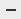

La interfaz de Junos Pulse muestra las conexiones de red y proporciona el estado de conectividad del punto final.
El Panel de conexiones de Junos Pulse muestra los botones de tareas de conexiones, indica las conexiones de red y le permite conectarse y desconectarse. Haga clic en la flecha que se encuentra junto al nombre de la conexión para ampliar la pantalla de conexión y mostrar el estado detallado. Generalmente, el administrador de red definirá sus conexiones, pero el administrador de red también puede permitir que defina sus propias conexiones.
Botones del Panel de conexiones:
Añadir una conexión nueva.
Editar una conexión inactiva seleccionada.
 Eliminar la conexión inactiva seleccionada.
Junos Pulse muestra también un icono de barra de menú que proporciona el estado de conexión y permite conectar y desconectar las tareas con rapidez. Un icono de la barra de menú proporciona el estado de todas las conexiones activas.